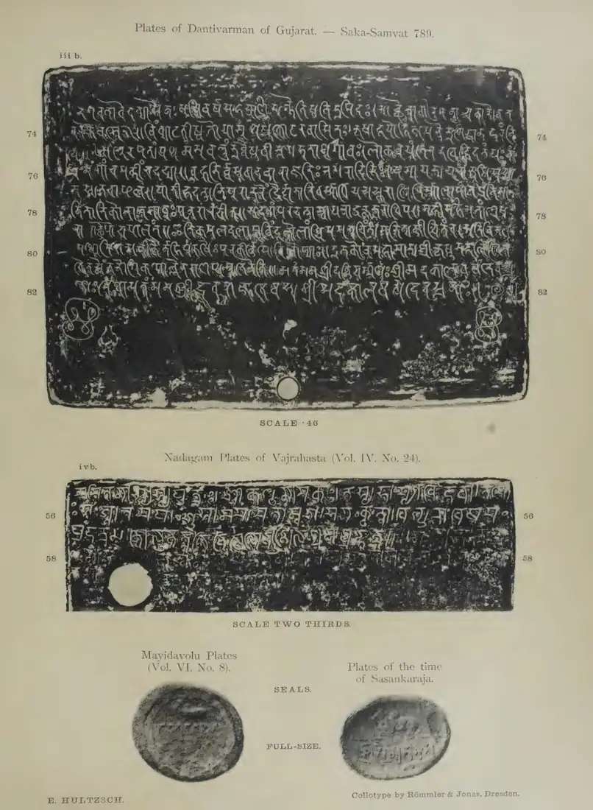
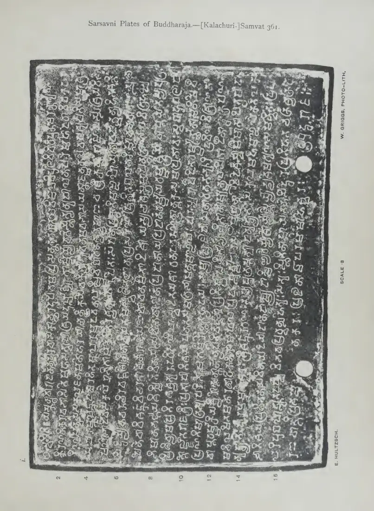
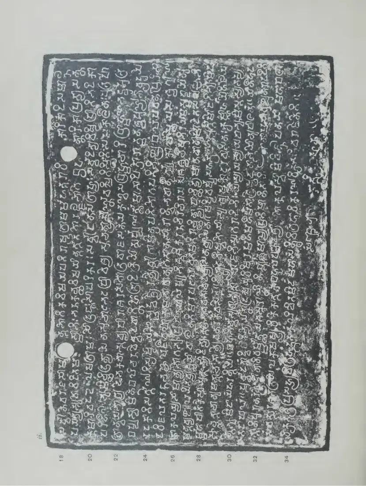

Sarsavni Plates of Buddharaja ; [Kalachuri-]samvat 361
SARSAVNI PLATES OF BUDDHARAJA ;
[KALACHURI-]SAMVAT 361.
BY F. KIELHORN, PH.D., LL.D., C.I.E. ; GÖTTINGEN.
These plates are in the possession of Patel Karsan Daji at Sarsavṇi (Sarasavaṇi), a village four and a half miles south of Pādra, in the Pādra subdivision of the Baroda State. Through Mr. Keshavlal Ranchhod Kirtania they were brought to the notice of Mr. Withal Nagar of Baroda, who kindly informed Dr. Hultzsch of their existence ; and at the latter's request Lieutenant-Colonel C. W. Ravenshaw, Officiating Resident at Baroda, was good enough to send the plates to him for examination. I edit the inscription which they contain from excellent impressions, furnished to me by Dr. Hultzsch.
These are two copper-plates, either of which measures 103/8" broad by 73/8" high, and is inscribed on one side only. Their margins are raised into rims. Through two holes at the bottom of the first and the top of the second plate are passed two unsoldered plain rings, measuring 21/2" and 21/4" in diameter. There is no seal, and no indication of one having been attached to the plates.— The writing is well done and carefully engraved, and throughout in an excellent state of preservation. The size of the letters is about 3/16". The characters belong to a variety of the southern alphabet which is well-known from Valabhî inscriptions and from the inscriptions
1 Read दत्तं.
4 Read धर्मार्थयश्.
7 Read दत्तां वा.
10 Read दलाम्बुविंद्.
2 Read बहु.
5 Read वान्तप्रति.
6 Read महीं.
11 Read मनुष्य.
3 Read तदा.
6 Read राददीत.
9 Read दामाच्छेयोनुपालनं.
Plate 1 is bound after this page.
of the Gujarât Chalukyas. As regards individual letters, attention may be drawn to the following signs: the initial é, e.g. in ésha, and the initial ð1 in Kumârivaðað, both in l. 20; the kh in likhitam=, l. 34, and askhalita-, l. 6; the d, e.g. in pídíta- and -maṇdalah, l. 10; the subscript ṇ in arṇpava-, l. 21; the th2 e.g. in prithivyám=apratirathas=, l. 9, and dharmmârttha-, l. 32; the ph, e.g. in phalañ, l. 31; the two forms of l, e. g. in phalañ and °pálanañ, l. 31, salilá° and balópá-, l. 9; the final m and t in prajánâm, l. 17, and vasét, l. 29; the jihvámúliya and upadhmâníya, e.g. in parah=kalañka-, l. 4, and vigrahah=pará-, l. 7. The writing, in line 35, also contains numerical symbols3 for 300, 60, 10, 5, and l.— The language of the inscription is Sanskrit, and with the exception of five benedictive and imprecatory verses in lines 28-32, the text is in prose. The orthography calls for few remarks. Instead of amusvára the guttural and dental nasals are employed in the words vañśa, ll. 6 and 12, vañśya, l. 24, and pradhvansa, l. 16; final visarga is changed to the jihvámúliya in parah=kalañka- and rahitah=kula-, l. 4, and to the upadhmâníya in vigrahah=pará-, l. 7, °patibhih=prabala-, l. 24, °mantavyah=pála°, l. 27, and sádhuh=punar=, l. 32; sh is (wrongly4) doubled after r in varshsha-, l. 28, and dh (correctly) before y in the word anuddhyáta, twice in line 14. Besides, the word prithivi is written prithivi in line 9, and a few times the rules of samđhi have been neglected.
The inscription is one of Buddharája, the son of Śaṅkaragaṇa who was the son of Kṛishnarája, of the family of the Kaṭachchuris5. It records an order of Buddharája's, issued from the royal residence or camp at Ānandapura, to the effect that he granted the village of Kumârivaðað, which was near to Brihaunârikâ, in the Gôrajjâ-bhôga of the Bharuka-chchha-vishaya, to the Brâhmaṇ Bappasvâmin, an inhabitant of Dêbhaka. It is dated, in words and numerical symbols, on the 15th of the dark half of Kârttika of the year 361.
The names of the three kings or chiefs— the inscription does not furnish any titles for them— who are mentioned in the preceding paragraph, are not new to us. As the date of the inscription must undoubtedly be referred to the Kalachuri era, it would fall in either A.D. 609 or A.D. 610,6 and it is therefore certain that the donor of the grant, Śaṅkaragaṇa's son Buddharája, is identical with that Buddharája, the son of Śaṅkaragaṇa, who according to the Nerûr plates (Ind. Ant. Vol. VII. p. 161) was put to flight by the Western Chalukya Maṅgalarája (Maṅgalésa), and to whom the Bâdâmi (Mahâkûṭa) pillar-inscription (of A.D. 602 (?), ibid. Vol. XIX. p. 16) refers when it states that Maṅgalésa, having set his heart upon the conquest of the northern region, conquered [the Kalatsûri] king Buddha and took away his wealth. Śaṅkaragaṇa, again, clearly is that 'Śaṅkaraṇa,' the son of Kṛishnarája, whose feet according to the Sânkhêdâ plate of Śântilla (Ep. Ind. Vol. II. p. 23) were meditated on by the Bhôgikapála Mahâpilupati Nirihullaka,7 and our grant proves the correctness of Prof. Bühler's suggestion (ibid. p. 22) that the reading Śaṅkaraṇah of the Sânkhêdâ plate should be altered to Śaṅkaragaṇah.
Though the eulogy of the three kings, which fills just one half of the inscription, does not contain any historical allusions, it is not void of interest. Some of the epithets applied to the
1 Compare the same letter in the word Ósumbhald, in the Snrat plates of the Gujarât Chalukya Xuvarája Śryáśraya-Sílâditya, Vienna Or. Congress, Arian section, p. 226, l. 21, Plate. The initial aī occurs in the word aihika, above, Vol. III. p. 55, l. 21, Plate; the initial au in Audamêghayé, Ind. Ant. Vol. V. p. 155, l. 24. Plate.
2 The same form of th we have in the Sâtârâ plates of Vishṇuvardhana I, Ind. Ant. Vol. XIX. p. 309, Plate.
3 The symbols agree with those given by Prof. Bühler from Valabhî plates.
4 Compare Pâñini, VIII. 4, 49. For other instances where sibilants are wrongly doubled, compare yassya, Gupta Inscr. p. 73, and pañchadaśtyám and śśrêyó-, ibid. p. 253.
5 So this word is written also in the Aihole inscription, above, p. 5, l. 6 of the text.
6 With my epoch for the later Kalachuri dates, the date (for the pûrnimânta Kârttika) would correspond to the 3rd October A.D. 609; but in agreement with the dates of the Nausârî and Kâvî plates of the Gurjara Jaynbhata III. (Nos. 402 and 403 of my List of Northern Inscr.) it would correspond to either the 22nd September or the 22nd October A.D. 610. The date, of course, does not admit of verification.
7 See my List of Northern Inscr. No. 427.
second king, Śaṁkaragaṇa, shew that the author was acquainted with, and borrowed or imitated, certain epithets which are found only in some of the Gupta inscriptions.1 On the other hand, it is clear that the eulogistic part of this inscription or of some similar Kaṭachchuri grant was known to, and made use of by, the authors of the corresponding portions of the grants 2 of the Gurjara Dadda [II.] Praśântarâga of the [Kalachuri] years 380 and 385, and of the [Gujarât] Chalukya Vijayarâja 3 of the [Kalachuri] year 394. Of the last named grant the first two lines may be said to be identical with the same lines of the present grant, and the description of Vijayarâja in lines 5-8 to a great extent literally agrees with the description of Śaṁkaragaṇa in lines 8-14 of the present inscription.4 In the case of the Gurjara grants the agreement is not so close, but about the fact that their author knew and made use of some such Kaṭachchuri grant as the one here edited, there cannot be the slightest doubt. In his opening sentence he too compares the family of the Gurjara kings with the great ocean (mahôdadhî), and in describing that ocean he employs the words vividha, vimala, gunaratna, udbhâsita, avilaṅghitâvadhî, gâmbhîrya, and the phrase mahâsattvayâtiduravagâhê, which to the reader of the present grant will surely betray their origin. Then, as in the present inscription Kṛishnarâja is described as from his very birth (â janmana êva) devoted to the service of Śiva, so the eulogist of Dadda makes that chief from his very birth (utpattita êva) worship the sun. He moreover, just as is the case in the present grant, continues the description of his chief in a series of relative sentences (yêna . . . yaṅ cha . . . yasya cha, etc.); and in the clause commencing with yasya cha in line 7 and ending with Vindhyanag-ôpatyakâh in line 10, he imitates,5 and labours to improve on, the relative sentence beginning with yêna cha in line 6 and ending with diśô in line 7 of the present grant. So far as I can judge, his plagiarism, if I may call it so, is not without some importance for the history of the Gurjaras. In my opinion, it tends to indicate that the family of these chiefs rose to independence only after the time of the Kaṭachchuri Buddharâja.6 If Dadda Praśântarâga had been preceded by other Gurjara kings, a eulogist of his, in drawing up his praśastî, most probably would have taken for his model some older Gurjara grant, and would not have allowed himself to be inspired by a Kaṭachchuri grant.
1 See my notes on the translation.
2 See Ind. Ant. Vol. XIII. pp. 82 and 88.
3 See ibid. Vol. VII. p. 248.
4 The present inscription shews that in line 7 of Vijayarâja's grant the intended reading is -nishêvt, not -nirmôchî.
5 In both inscriptions the king is compared with an elephant (vanavâraṇa-yûthapa and bhadra-mataṅga). Instead of the epithet ruchira-vaṁśa-śôbhin of the present grant, the author of the Gurjara grant puts sad-vaṁś-âhita-śôbhâ-gaurava, where also the word vaṁśa has the double meaning of 'backbone' and 'lineage.' The word ruchira, which the imitator here discards, he employs in the same line in ruchira-ktriti-vaśâ-sahâya, 'accompanied by his bright fame' as the elephant is 'by his charming mate.' In a similar way he treats the following epithet of the present inscription, askhalita-dâna-prasara. The first and last word of this compound suggest to him his askhalita-padaṁ prasaratah, and the sense of the whole compound he expresses, in a more elaborate manner, by the compound commencing with avirata-dâna-pravâha. Of his own he adds, that his chief took delight in the lands lying at the foot of the Vindhya mountain.—As it concerns a point of history, I may perhaps state, here that I differ from those scholars who understand the epithet âkrishta-śatru-nâga-kula-saṅtati in lines 3 and 4 of the Gurjara grant (Ind. Ant. Vol. XIII. p. 82) to mean that Dadda I. conquered some hostile tribe or family of the Nâgas. In my opinion, nâga here means nothing but 'snake,' and the author simply says that Dadda uprooted his enemies as the bird Garuṣa destroys the snakes. The compound is exactly like prinit-ârthi-madhukara-kula in line 8 of the same inscription, which everybody would admit to mean that the king (by his liberality) delighted the suppliants as the elephant (by his rutting-juice) does the bees. If the eulogy of Dadda I. does contain any historical allusion, it is furnished, in my opinion, by the epithet Kṛishna-hriday-âhitâspadah in lines 2 and 3, the word Kṛishna of which, in addition to denoting the god Kṛishna, may perhaps denote the Kaṭachchuri Kṛishnarâja, and which therefore may represent Dadda I. as a favourite (or feudatory) of that Kaṭachchuri king; as the Kaustubha gem is placed on Kṛishna's breast, so Dadda found a place in Kṛishnarâja's heart.' That the epithet Kṛishna-hriday-âhitâspadah, just like the Śrī-saxhjanmâ by which it is preceded, does convey a double meaning, is not at all doubtful; the only question is whether it might not be taken to mean 'he whose actions (âspada=kritya) were hostile to the evil-minded.'
6 Compare Dr. Fleet's Dynasties, p. 315.
I may further point out that in the wording of the formal part of the grants also the two inscriptions of Dadda Prasântarâga referred to above agree most closely with the inscription here edited. We find in them exactly the same list of officials to whom the order is addressed (sarvân=êva râja-sâmanta-bhôgika-vishayapati-râshtragrâmamahattar-âdhikârik-âdîn); the same technical and other terms applied to the village granted (from êsha grâmah to putra-pautr-ânvaya-bhôgyah in lines 20-22 of the present inscription); with the exception of a single word, the same form of appeal to future rulers to preserve the grant, and, with the omission of one verse, the same benedictive and imprecatory verses, given in the same order. And one cannot help asking oneself how very different all this might have been, if the existing Gurjara grants of Śaka-Sainvat 400, 415 and 4171 were really genuine documents.
Of the localities mentioned in this inscription, Ānandapura, from where the grant was issued, probably is the same Ānandapura from where the Alinâ grant of Śîlâditya VII. Dhrûbhaṭa of Valabhî of the year 447 was issued, and which has been identified by Dr. Fleet2 with the modern Ānand, the chief town of the Ānand subdivision of the Kaira district. And Bharukachchha, so often mentioned elsewhere, is the modern Broach. Đebhaka, the place of residence of the donee, apparently is Dabka,3 a village in the Baroda State, about 8 miles west of Pâdra and 40 miles north of Broach. On the remaining localities Dr. Fleet, who at my request has kindly searched the sheets No. 22, S. E. (18S3) and No. 36, S. W. (1897) of the Indian Atlas, of which copies were not accessible to me, has sent me the following note:—“The Gôrajjâ of this grant must be the ‘Goraj’ of sheet No. 36, in lat. 22° 20′, long. 73° 32′, in the Hâlôl subdivision of the Pañch Mahâls: it is shewn as a town or large village 11 miles on the south of Hâlôl, and is about 54 miles towards the north-east-by-north from Broach. Kumârivadaô must be the ‘Kawarwara’ of sheet No. 22, about 11 miles towards the west-south-west from ‘Goraj,’ and about 8 miles east-south-east from Baroda; it is about 24 miles almost due east of ‘Dabka.’ And Brîhannârikâ must be the ‘Banaiya’ of the same sheet, 4½ miles on the south of ‘Kawarwara.’”
TEXT.4
First Plate; Second Side.
- 1 Ôm5 svasti [||*] Vijaya-skandhâvârâd=Ānandapura-vâsakâch=chharad-upagama-prasanna-gaganatala-vimala-vipulê vividha-purusharatna-guṇa-
- 2 kiraṇa-nikar-âvabhâsitê mahâsa[t*]tv-âpâśraya-durllanghê gâmbhîryyavati sthity-anupâlana-parê mahôdadhâv=iva Kaṭa[chch]uJ-6
- 3 rîṇâm=anvayê sakala-jana-manôharayâ chandrikay=êva kîrty[â] bhuvanam=avabhâsayann=â janmana êva Paṣupati-samâśra-
- 4 ya-parah=kalaîka-dôsha-rahitah=kula-kumudavana-lakshmî-vibôdhanas=chandramâ iva śrî-Krîshṇarâjô yas=samśraya-visê-
- 5 sha-lôbhâd=iva sakalair=âbhigâmikair=itaraiś=cha guṇair=upêtah saripanna-prakṛiti-maṇdalô yathâvad=âtmany=âhita-śakti-
- 6 siddhir=yyêna cha ruchira-vañśa-7śôbhinâ niyatam=askhalita-dâna-prasarêṇa prathita-bala-garimnâ vanavâraṇa-yûtha-
- 7 pên=êv=âviśaîkam vicharatâ vana-râjaya iv=âvanamitâ disô yasya cha śastram=âpanna-trâṇâya vigrahah=par-â-
- 8 bhimâna-bhaûgâya śikshitaîn vinayâya vibhav-ârjjanam pradânâya pradânamîn dharmmâya dharmmaś=śrêyô-vâptayê tasya putrah
1 See my List of Northern Inscr. Nos. 347-349.
2 See Gupta Inscr. p. 173.
3 See the Gazetteer of the Bombay Pres. Vol. VII. p. 542.
4 From impressions supplied by Dr. Hultzsch.
5 Expressed by a symbol.
6 The consonants of the akshara chchu are not clear in the impressions, but I do not think that the akshara can be read differently.
7 Read -vañía-.
9 pri(pri)thivyâm=apratirathas=chatur-udadhi-salil-âsvâdita-yasâ Dhanada-Varup-Êndr-Ântaka-sama-prabhâvah sva-bâhu-bal-ôpâ-
10 tt-ôrjjita-râja-srîh pratâp-âtišay-ôpanata-samagra-sâmanta-maṇḍalaḥ paraspar-âpîdita-dharmm-ârttha-kâma-nishêvî
11 prapatimâtra-suparitôsha-gambhîr-ônnata-hṛidayaḥ samyak-prajâpâlan-âdhigata-bhûri-draviṇa-viśrâṇan-â-
12 vâpta-dharmmakriyas=chir-ôtsannânâm nripati-vanśânâm¹ pratishṭhâpayit=âbhyuchchhritânâm=unmûlayitâ dîn-ândha-kṛipaṇa-sa-
13 mabhilashita-manôrath-âdhika-nikâma-phala-pradaḥ pûrvv-âpara-samudr-ânt-âdi-dêsa-svâmî mâtâpitrî-pâdâ-
14 nuddhyâtaḥ parama-Mâ[h]êsvaraḥ śrî-Śaṅkaragaṇaḥ² tasya putras=tat-pâdânuddhyâtaḥ sakala-mahîmaṇḍal-aika-tilakaḥ
15 sâtišaya-prathita-naya-vinaya-dayâ-dâna-dâkshya-dâkshiṇya-dhairyya-śauryya-sthairyy-âdy-asêsha-guṇa-samanvitaḥ praba-
16 la-ripu-bal-ôdbhûta-darppa-vibhava-pradhvansa-³hêtuḥ sêtuḥ sthitînâm=âyatanam siddhêr=apratihata-chakras=Chakradha-
17 ra iv=ârtti-prasamana-karaḥ prajânâm parama-Mâhêsvaraḥ śî-Buddharâjaḥ
Second Plate ; First Side.
18 sarvvân=êva râja-sâmanta-bhôgika-vishayapati-râshṭragrâmamahattar-âdhikârik-âdi⁴
samâjñâ-
19 payaty=astu⁵ vô viditam=asmâbhihḥ Bharukachchha-vishay-ântarggata-Gôrajjâ-⁶
bhôgê Bṛihannârikâ-pratyâsanna-
20 Kumârivaḍaô ¹⁷ êsha grâmaḥ s-ôdraṅgaḥ s-ôparikaraḥ sarvv-âdâna-saṅgrâhyaḥ
sarvva-ditya-vishti-prâtibhêdikâ-
21 parihîṇô bhûmichchhidra-nyâyêna⁸ a-châṭa-bhaṭa-prâvêsya â-chandr-ârkk-ârṇṇava-kshiti-sthiti-samakâlînaḥ putra-pau-
22 tr-ânvaya-bhôgya⁹ Đebhakavâstavya-Pârâśarasagôtra-VâjasanêyaKaṇvasabrahmachâri-brâhmaṇa-Bhatṭu-putra-
23 Bappasvâminê bali-charu-vaisvadêv-âgnihôtr-âdi-kriy-ôtsarppaṇ-ârttham mâtâpitrôr=âtmanas=cha puṇy-âbhivṛidhayê¹⁰
24 udak-âtisarggêṇ=âtisṛishṭô¹¹ yatô=smad-vanśyair=¹²anyair=vv=âgâmi-nripati-bhôgapatibhihḥ=îprabala-pavana-prêrit-ô-
25 dadhi-jala-taraṅga-chañchalam jîva-lôkam=abhâv-ânugatân=asârân=vibhavân=dîrggha-kâla-sthêyasas=cha guṇâ-
26 n=âkalayya sâmânya-bhôga-bhû-pradâna-phal-êpsibhis=śasî-kara-ruchia am chirâya yaśas=cha chîshubhir=¹³ayam=asmad-dâyô=nu-
27 mantavyaḥ=pâlayitavyas=cha [|*] Yô v=âjñâna-tîmira-paṭal-âvrita-matir=âchchhindyâd=âchchhidyamânam v=ânumôdêta sa pañchabhi-
28 r=mmahâ-pâtakais=samyukta¹⁴ syâd=ity=uktañ=cha bhagavatâ vêda-vyâsêna Vyâsêna || Shashṭim¹⁵ varshsha-sahasrâṇi svarggê môdati bhûmi-daḥ [|*]
29 âchchhêttâ ch=ânumantâ cha tâny=êva narakê vasêt || Vindhy-âṭavîshv=atôyâsu śushka-kôṭara-vâsinaḥ [|*] kṛishṇâhayô hi jâya-
¹ Read -vamîsânâm.
² Read °gṇṇa s.
³ Read -pradhvaṅsa.
⁴ Read -âdîn.
⁵ Read payati | Astu vô viditam | Asmâbhir.
⁶ It is just possible that the name engraved is Gôrujjâ.
⁷ This mark of punctuation is superfluous.
⁸ Read -nyâyê=â-châṭa.
⁹ Read -bhôgyô.
¹⁰ Read °ddhaṇ.
¹¹ Read °sṛishṭuḥ |.
¹² Read -vamîsyair.
¹³ Read yaśas=chichî-hubhir.
¹⁴ Read °ktas=syâd=iti | Uktañ.
¹⁵ Metre of this and the next three verses: Ślôka (Anushṭubh).— Read varsha.
Plate 2 is bound after this page.
Plate 3 is bound after this page.
| 30 | ntê bhûmi-dâyam haranti yê || | Bahubhir=vvasudhâ bhuktâ râjabhis=Sagar-âdibhih [[*]] yasya yasya yadâ bhûmis=tasya tasya | |
| 31 | tadâ phalam || | Pûrvva-dattâm dvijâtibhyô yatnâd=raksha Yudhishthira [[*]] mahî[[*]] mahîmatâ[[m]] śrêshṭha dânâch=chhrêyô=nupâlanam || | 1Yân=îha da-ttâni purâ narêndrair=ddânâni dharmm-ârttha-yaśas-karâpi [[*]] nirbbhukta-mâlya-pratimâni tâni kô nâma sâdhuh=punar=âdadîti(ta)[[]] |
| 33 | Samvatsara-śata-trayê2 | êkashashṭy-adhikê Kârttika-bahula-pañchadasyâm Gôkulasvâmi-vijñâpanayâ mahâbalâ- | |
| 34 | dhikrîta-śri-Prasahyavigraha-dûtakam | likhitam=idam mahâsandhivigrahâdhikaran-âdhikrîta-Śivarâjên=êti || | |
| 35 | Sam 300 60 1 Kârttika-ba 10 5 || |
TRANSLATION.
(Line 1.) Ôm. Hail ! From the royal residence 3 of victory, fixed at Ānandapura:—4
In the lineage of the Kaṭachchuris— which, like the great ocean, is extensive and spotless as the vault of the sky clear on the advent of autumn; illumined by the mass of the rays of the manifold excellences of jewels of men (as the ocean is by those of its gems); difficult to be crossed because it is the home of men of great vigour (as the ocean is of large animals); endowed with profundity (and) intent on observing the limits of what is right (as the ocean is on keeping within its proper limits)— (there was) the glorious Kṛishṇarâja, who illumined the world with his fame that charmed all mankind, who from his very birth was devoted to the service of Paśupati (Śiva), who promoted the fortune of his family (and who thus, though) free from blemish,5 was like the moon which illuminates the earth with its light pleasing to all mankind, which is ever resting on Śiva, (and) which causes the groups of night-lotuses to expand. From a desire, as it were, of securing a choice resting-place, he was resorted to by all the qualities that make a king the object of attachment,6 as well as by every other excellence. He was fully endowed with all the constituent elements of royalty, and duly reaped the beneficial results (of his management) of the regal powers.7 As the chief elephant of the herd, distinguished by its splendid backbone, with the flow of its rutting-juice never ceasing, displaying the might of its strength, fearlessly roams about and breaks down rows of forest-trees, so he, who was illustrious by his splendid lineage, and the stream of whose liberality was never failing, and the might of whose power was well-known, marched about without apprehension and brought to subjection the regions. He wielded the sword to protect people in distress,8 made war to break the conceit of adversaries, engaged in study to learn propriety of conduct, gathered wealth to make donations, made donations for the sake of religious merit, and acquired religious merit to obtain the bliss of final emancipation.
(L. 8.) His son, who meditated on his parents' feet, (was) the devout worshipper of Mahêśvara (Śiva), the glorious Śamkaragaṇa, the lord of the countries bounded by the eastern and western seas and of other lands; who9 on the earth had no antagonist equal to him; whose fame was tasted by the waters of the four oceans; whose might was like that of Dhanada,
1 Metre: Indravajrâ.
2 R-ad -traya.
3 Or ' from the camp . . . pitched at.'
4 The sentence is continued below, in the words ' the glorious Buddharâja.'
5 The beauty of the moon is marred by a dark spot.
6 On the passage containing the word dbhigâmika compare Gupta Inscr. p. 166, l. 16, and p. 169, note 2.
7 Viz. the powers of mastery, good counsel, and energy.
8 Compare the Śakuntalâ, in the first act, arta-trânâya vah'hastram.
9 This epithet and the two next— one with a slightly different reading— are well known from Gupta inscriptions; compare e.g. Gupta Inscr. p. 26, l. 1 of the text; and D .Fleet's note, ibid. p. 14, note 4.
Varuṇa, Indra, and Antaka ;1 who by the strength of his arms2 acquired the fortune of powerful kings ; before whose pre-eminent prowess there bowed down the circle of all the neighbouring princes ; who engaged in the pursuit of religious merit, wealth and pleasure, without allowing them to encroach upon one another ; whose profound and elevated mind was well pleased only by submission ;3 who accomplished acts of religion by distributing in charity the ample wealth acquired by properly protecting his people ; who reinstated families of princes long subverted,4 and uprooted the exalted ; and who to the afflicted, the blind and the poor granted the object of their desire, more fully even than their hearts longed for.
(L. 14.) His son, who meditates on his feet, who is the unique frontal ornament of the whole circle of the earth ; who is endowed with all the most celebrated qualities, such as prudence, good conduct, compassion, liberality, cleverness, dexterity, fortitude, heroism, firmness and the rest ; who causes the destruction of the might of conceit, arising from power, of powerful enemies ; who is a dam to safeguard all ordinances, and a resting-place of success ; and who, like the Discus-bearer (Vishnu) with his irresistible disc, with his irresistible army relieves the distress of the people— he, the devout worshipper of Mahêsvara (Śiva), the glorious Buddharāja, issues this order to all Rájas, Sámantas, Bhôgikas, Vishayapatis, Ráshṭra- and Grúma-mahattaras, Ádhikárikas and others :—
(L. 19.) Be it known to you ! For the increase of the religious merit of our parents and ourselves we have granted, with pouring out of water, the village of Kumârivađaô which is close to Bṛihannârikâ, in the Gôrajjâ-bhôga that lies within the Bharukachchha-vishaya,—with the udraṅga, with the uparikara, with all imposts and taxes,5 exempt from all ditya, forced labour and prátibhédikâ, according to the maxim of bhúmichchhidra, not to be entered by irregular and regular soldiers, for as long as the moon, the sun, the sea and the earth endure, to be enjoyed by the succession of sons and sons' sons— to the Bráhmaṇ Bappasvâmin, the son of Bhatṭu, who is an inhabitant of Dêbhaka, a member of the Pârâsara gôtra, and a student of the Kaṇva sákhâ of the Vájasanêya Vêda, for the maintenance of the bali, charu, vaisvadêva, agnihôtra and other rites. Wherefore, let future kings and Bhôgapatis, whether of our own family or others— bearing in mind that the world of living beings is unsteady like a wave of water of the sea raised by a fierce wind, that wealth is liable to perish and void of substance, and that virtue endures for a long time— desirous of sharing in the reward of (this) donation of land, and anxious to accumulate for a long time fame as bright as the rays of the moon, consent to this our gift and preserve it ! Whosoever, with his mind covered by the veil of the darkness of ignorance, should take it away or permit it to be taken away, he shall be guilty of the five great sins ! And it has been said by the holy Vyâsa, the arranger of the Vêdas :—[Here follow five imprecatory verses.]
(L. 33.) In three hundred years increased by sixty-one, on the fifteenth tithi of the dark half of Kârttika, at the request of Gôkulasvâmin,6 this (edict)— the dútaka of which is the Mahábaládhikrita,7 the illustrious Prasahyavigraha— was written by the Mahâsaṅdhivigrahâ-dhikaraṇádhikrita8 Śivarâja.
The year 300 60 1 Kârttika-badi 10 5.
1 I.e. the guardian deities of the northern, western, eastern and southern quarters.
2 Compare Gupta Inscr. p. 8, l. 26, where the compound Dhanada-Varuṇ-Āndr-Āntaka-sama is followed by another, commencing with sea-bhuja-bala-.
3 Compare ibid. p. 8, l. 25, bhaktyavanatimâ'ra-gråhya-mṛidu-hridayasya.
4 Compare ibid. p. 8, l. 23. unêka-bhrashṭarâjy-ôtsanna-råjavamśa-pratishthâpana.
5 The original has sarv-âddâna-saṅgråhya, which may have some more specific meaning.
6 I am unable to state the position of this personage with regard to either the donor or the donee.
7 I.e. ' the great Bal-âdhikrita (or general) ;2 see my List of Northern Inscr. No. 427.
8 I.e. ' the great Saṅdhivigrah-âdhikaraṇ-âdhikrita (or officer charged with the ministry of peace and war) ;3 compare e.g. the Gurjara grants, Ind. Ant. Vol. XIII. p. 34, l. 50, and p. 90, l. 50.


